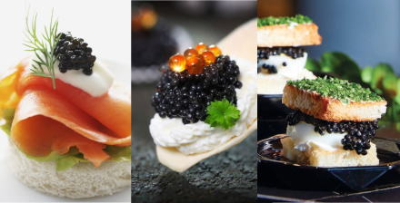
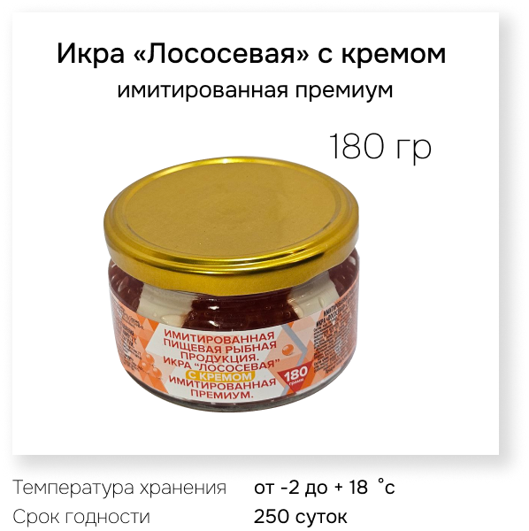
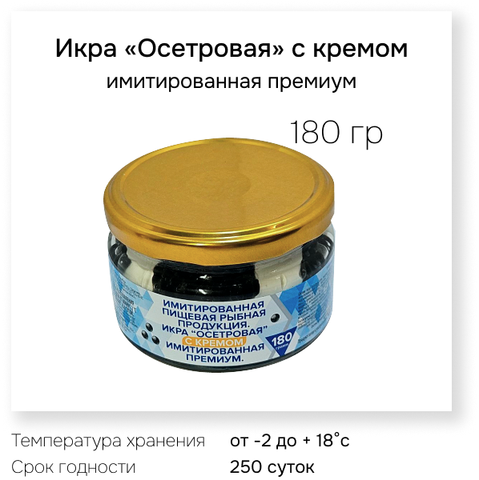
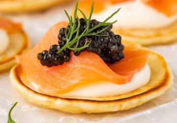
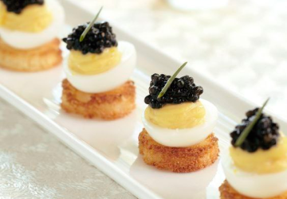
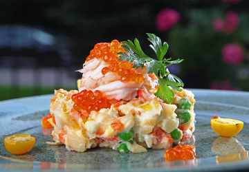

|
Имитированная икра с кремом – это идеальное сочетание
вкуса, |

С имитированной икрой с
кремом можно |
|  |  |
|

Гарниров для морепродуктов и |

Украшения канапе и закусок: икра |

Добавления в соусы и салаты: |